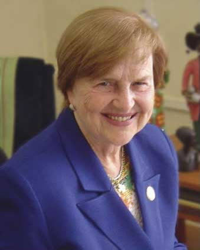

Rita Lee Jones
Rita Lee foi uma cantora, compositora e instrumentista brasileira, considerada uma das grandes representantes do rock brasileiro.
Ela ficou conhecida por sua participação na banda Os Mutantes e, posteriormente, por sua carreira solo.
Com seu talento e estilo inovador, Rita Lee marcou a música brasileira e se tornou uma importante referência para outras gerações de artistas.
Contribuições de Rita Lee
- Ajudou a transformar o rock brasileiro: com Os Mutantes, participou do movimento Tropicália e ajudou a trazer novas sonoridades para a música brasileira.
- Abriu espaço para mulheres na música: Rita foi uma das primeiras mulheres a se destacar tocando guitarra e ocupando um lugar de liderança no rock, em um cenário dominado por homens.
- Criou músicas que marcaram gerações: músicas como “Ovelha Negra”, “Lança Perfume” e “Baila Comigo” fizeram grande sucesso e ajudaram a consolidar sua importância na música brasileira.
- Abordou temas ligados à liberdade feminina: suas músicas trataram de assuntos relacionados à autonomia, comportamento e questões vividas pelas mulheres, ajudando a ampliar a representação feminina na música.
Curiosidades
Uma curiosidade sobre Rita Lee, é que ela começou a tocar bateria aos 15 anos de idade. Pouco depois, em 1966, formou a banda Os Mutantes, que se tornou um importante nome do rock brasileiro.
Outra curiosidade: em 2014, Rita Lee decidiu deixar de pintar os cabelos de vermelho, que era uma marca de sua imagem, e passou a assumir os fios brancos.
Bibliografia
Referência: FRAZÃO, Dilva. Rita Lee.
Disponível em:
https://www.ebiografia.com/rita_lee/ .
Acesso em: 21 ago. 2026.
Citação com autor incluído no texto: Frazão (2026)
Citação com autor não incluído no texto: (FRAZÃO, 2026)
Dra.Zilda Arns Neumann

Zilda Arns foi uma médica brasileira que dedicou sua vida à saúde das crianças e das famílias. Ela criou e coordenou ações da Pastoral da Criança, contribuindo para melhorar a saúde e reduzir a mortalidade infantil no Brasil.
Contribuições de Zilda Arns
- Zilda Arns dedicou-se à saúde e ao bem-estar das crianças, especialmente das famílias mais vulneráveis.
- Por meio da Pastoral da Criança, ajudou a desenvolver ações de saúde, nutrição e educação, contribuindo para a redução da mortalidade infantil no Brasil.
Educação e formação acadêmica
De acordo com as informações disponíveis do Ministério da Saúde, Zilda Arns formou-se em Medicina pela Universidade Federal do Paraná (UFPR) e se especializou em Pediatria e Saúde Pública.
Sua formação foi importante para o trabalho que desenvolveu na área da saúde infantil e comunitária.
Curiosidades
Zilda Arns teve uma atuação importante na Pastoral da Criança e participou de iniciativas ligadas à saúde pública e à defesa da saúde das crianças. Ela também participou da 11ª Conferência Nacional de Saúde, como coordenadora do grupo consultivo.
Bibliografia
Referência: PASTORAL DA CRIANÇA. Biografia da Dra. Zilda Arns Neumann.
Disponível em:
https://pastoraldacrianca.org.br/biografia-dra-zilda.
Acesso em: 14 nov. 2026.
Citação com autor incluído no texto: Pastoral da Criança (2026)
Giovanna Waksman
A atacante Giovanna Waksman é tida como a principal promessa do futebol feminino brasileiro para os próximos anos.
Nascida no Rio de Janeiro, em 21 de março de 2009, Giovanna Waksman iniciou sua trajetória no futebol no Sogima FC, um clube de Jacarepaguá. Depois de uma rápida passagem pelo Fluminense, a atacante chegou ao Botafogo no final de 2020 e sempre foi tratada como uma joia.
Inicialmente, Giovanna começou a treinar com as jogadoras do sub-18 e até mesmo do profissional, já que o clube não tinha um time feminino da categoria. Com tamanha desenvoltura, a atacante passou a integrar as equipes masculinas sub-12 e 13, onde não só foi titular como também recebeu a camisa 10.
Em 2022, John Textor comprou a SAF do Botafogo e ficou deslumbrado com a categoria da jovem. O norte-americano, então, decidiu montar um projeto esportivo para Giovanna Waksman.
Contribuições de Giovanna Waksman
- Representou o Brasil em competições internacionais pelas categorias de base da Seleção Brasileira.
- Contribuiu para o crescimento do futebol feminino, ganhando destaque como uma jovem promessa.
- Inspirou outras meninas a praticarem futebol e buscarem espaço no esporte.
- Levou o nome do Brasil para competições internacionais por meio de seu desempenho como jogadora.
- Destacou a importância da participação feminina no esporte, especialmente entre as novas gerações.
Curiosidade
Giovanna Waksman começou a ganhar destaque no futebol ainda jovem e chegou a representar a Seleção Brasileira, sendo considerada uma das jovens promessas do futebol feminino brasileiro.
Bibliografia
Referência: MEYER, Lorenzo. Seleção brasileira de futebol feminino: quem é
Giovanna Waksman, fenômeno de 15 anos que vai defender o Brasil na Copa do
Mundo sub-17.
Disponível em:
https://www.olympics.com/pt/noticias/quem-e-giovanna-waksman-selecao-brasileira
.
Acesso em: 21 ago. 2026.
Citação com autor incluído no texto: Meyer (2026)
Citação com autor não incluído no texto: (MEYER, 2026)